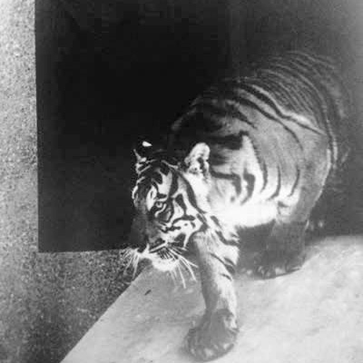
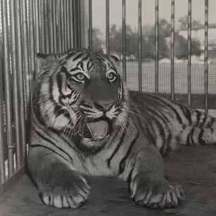
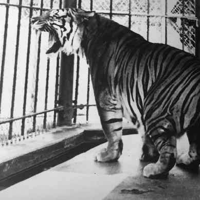

Mike I

Mike II

Mike III
Mike IV
LSU is one of the few schools lucky enough to have a live mascot on campus. Mike the Tiger has been an icon on LSU's campus for almost 90 years. Mike I first came to campus in 1936 living in just a small cage, but his successors have grown into much larger homes. Mike VII's current habitat is bigger than some students' apartments. Having a live tiger on campus is a unique experience that students take pride in. Mike gets many visitors every day; spending some time by Mike's habitat is the best way to brighten your day.
Mike I
Mike II
Mike III
Mike IV
Mike V
Mike VI
Mike VII